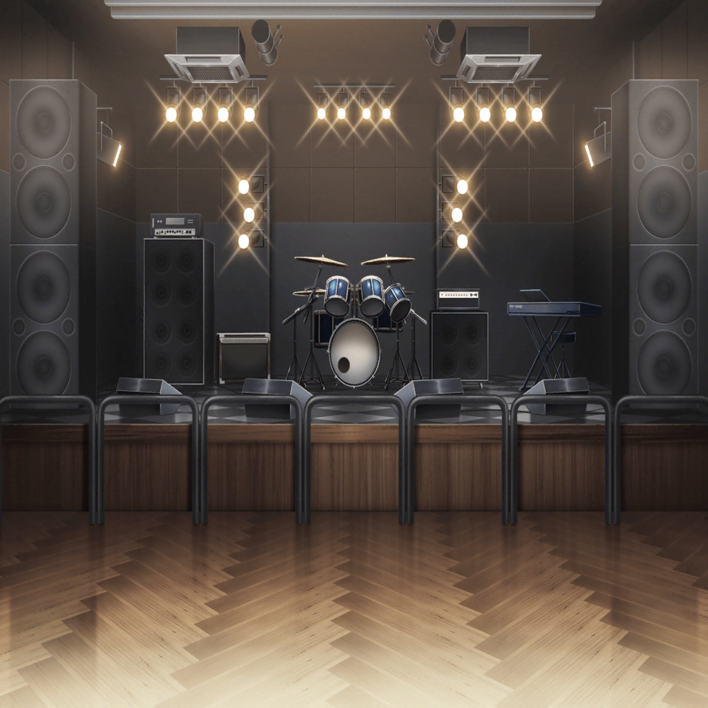

市ヶ谷家 蔵
有咲
休憩中なんだし、ちょっと休めば？
香澄
ううん、大丈夫！
有咲
大丈夫って……このところ昼休みも練習してるだろ。
さすがに根を詰めすぎっていうか……
香澄
平気平気……いたっ！
有咲
どうした？
香澄
え、えへへ、指切っちゃった
有咲
マジか……
えっと、救急箱救急箱……あった
有咲
ほら、絆創膏。気をつけろよ
香澄
ありがと、有咲
有咲
…………
香澄
……？ どうしたの？
有咲
香澄ってさ、いつも楽しそうだよな
香澄
うん！ 楽しいよ！
一生懸命練習がんばるのも楽しい！
有咲
……がんばるのってしんどくない？
香澄
え？
有咲
どんだけやれば満足できんの？
完璧な演奏ができたら？ SPACEでライブできたら？
有咲
オーディションのためにがんばるって、
もうそれ楽しいとは違うんじゃねって思うんだけど……違う？
香澄
有咲、楽しくないの？ ポピパ……
有咲
え？ いや、んー……
香澄
楽しくないの！？
有咲
違っ！ 楽しいよ……！
有咲
あ！ いや、今のは！！
香澄
えへへ〜、だと思った！
香澄
みんなでバンドやるの楽しいから練習も楽しいし、
SPACEでライブやったら楽しいよっ！ 絶対っ！
有咲
絶対なー……
まあ、騙されたと思ってやってみるか
有咲
オーディション、受けるからには受かるから
香澄
うん！ がんばろ〜〜！！
有咲
うわあ！ 抱きつくなって！ やーめーろー！
沙綾
ただいまー
香澄
あっ、さーや達だ！ 買い出しお疲れさま！
りみ
ごめんね、クリームあんみつなかった〜
たえ
代わりにハンバーグ買ってきたよ
有咲
なんでだよ！
沙綾
あはは、大丈夫。
ちゃんと有咲が好きそうな和菓子買ってきてるから
たえ
あれ？ 香澄、指怪我したの？
りみ
え、大丈夫？
香澄
平気平気！ 弦で切っちゃっただけだから！
……って、おたえも指ケガしてる！
たえ
ああ、昨日ずっと練習してたから
有咲
大丈夫かよ……？
たえ
うん、大丈夫。このぐらいで負けない
たえ
足りないもの、考え始めたらたくさんあって……
練習しても練習してもゴールってないのかなって思うくらい
たえ
でも練習する。
100回やってダメなら101回、それでもダメなら1000回。
もう大丈夫って思えるまでやろうって決めたんだ
りみ
私もおたえちゃんの気持ちわかるよ
りみ
失敗したらどうしようって、オーディションは下ばかり見てた。
でも、それじゃダメだよね
りみ
聞いてくれる人に楽しいなって思ってほしいから、
私も楽しく弾けるまでいっぱい練習したい
有咲
おたえ、りみ……
香澄
…………
沙綾
……私もオーディションのあとちょっと考えたんだ
沙綾
合格できたらいいなぐらいの気持ちだったなって。
でも、そんな気持ちで臨んでも受かるわけないよね
沙綾
今は本気であのステージに立ちたいって思ってるよ。
ナツ達と同じステージに、ポピパのみんなと立ちたい
有咲
（私もそんな気持ちだったかもな……）
有咲
（香澄に誘われて、なんとなくバンド始めて……
みんなといるのが楽しいからなんとなく続けて……
でも、それって本気じゃないんだよな……）
有咲
（みんなとあのステージに立ちたいなら、
私も本気でやらないと……だよな）
たえ
やろ、香澄。今よりももっと熱く
香澄
う、うん、もっとがんばらなきゃだよね！ 私も……！
有咲
そんじゃあやるかー！
たえ・沙綾・りみ
おー！
香澄
…………

数日後
SPACE ステージ
沙綾・たえ・有咲・りみ
オーディション、よろしくお願いします！
オーナー
準備ができたら始めな
沙綾
……よし、いつでもいけるよ
たえ
こっちも大丈夫。ドキドキしてきた
有咲
こっちもいける！ 今日は絶対合格するからな……！
りみ
合格しようね、香澄ちゃん
香澄
う、うん……
沙綾
みんな、準備できたみたいだね。
それじゃ、ワン、ツー、スリー、フォー
香澄
た……と……え……
……………………
沙綾・たえ・有咲・りみ
………！
香澄
あ、あれ……？
な、なんでだろ……
りみ
香澄ちゃん……
有咲
お、おい……
オーナー
…………
香澄
ご、ごめ……ごめん……
なんで声出ないんだろ……変だな……